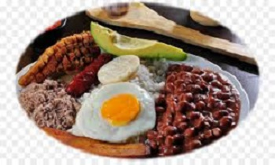

Bandeja Paisa

Preparación:
Remoja los frijoles en agua hasta cubrirlos la noche anterior a cocinarlos. Cocina los frijoles en esa misma agua, con la mitad del aceite. Cuando estén blandos, agrega la sal. Mientras tanto, sofríe la carne molida en aceite a fuego medio alto añadiendo la mitad del hogao y revuélvelo bien. Corta en trocitos el tocino y fríe los chicharrones. Mézclalo todo y cocínalo en una sartén durante 10 minutos. Cuando los frijoles estén blandos, añade el guiso restante y cocina entre 5 y 10 minutos adicionales. Luego, en una sartén, coloca aceite para freír los plátanos dulces o los patacones y los huevos fritos. Sírvelo en bandejas con arroz, aguacate y las arepas. Hogao o guiso: Mézclalo todo y cocínalo en una sartén durante 10 minutos. Arepas: En un tazón suficientemente grande para amasar, coloca la harina de maíz. Sobre la harina agrega aceite. Añádele sal al agua, viértela y mezcla hasta conseguir una masa consistente. Haz bola de masa en tu mano y aplánala con tus dos manos hasta darle una forma redondita. Luego en una sartén con aceite, ásalas hasta que se doren ambos lados.Escribe un comentario:
Ándres: Son mis preferidos y el desayuno perfecto y facil de preparar.

Nikole: Gracias por la receta a mi esposo le encantan!!!!.
Salmón en Salsa Teriyaki

Preparación:
Sazona los filetes de salmón con sal. En una sartén, agrega una cucharada de aceite de oliva y cuando esté caliente dora los filetes por ambos lados, no es necesario dejarlos mucho tiempo ya que el salmón es de cocción rápida, puedes dejarlos máximo 5 minutos por cada lado.Para la Salsa Teriyaki
En una olla, agrega media taza de salsa soya, 3 cucharadas de azúcar morena, dos dientes de ajo machacados y dos láminas de jengibre, cocina hasta que el azúcar se disuelva. Agrega media taza de agua y una cucharadita de fécula de maíz o maicena para espesar la salsa. Revuelve muy bien y apaga cuando la salsa espese. Retira las láminas de jengibre y los restos del ajo, si consideras necesario puedes colar la salsa. Sirve el salmón, báñalo con la salsa teriyaki y por encima agrega el ajonjolí o las semillas de sésamo.Escribe un comentario:
Maria Camila: Esta receta es una de mis preferidas solo que no sabia como se preparaba.. Gracias por la receta la voy a preparar.